One zoomable canvas for hosts, VMs, containers and links, with combinable layers for performance and network, storage, backup, construction sites, health, version and drift. Motion only where something happens; persona assessments on top of plain facts. This Dossier also decides the visual stack for the hosting area: one canvas renderer and one chart library, both lazy, both measured.
Status decision-pendingPhase decision-readySource AGT-3955Updated 17 November 2026Family AGT-3879, AGT-3949, AGT-3950, AGT-3954, AGT-3955
Request
On 17 November 2026 the owner asked for a modern, dynamic view of hosts and containers on a canvas: zoom in, see many kinds of data, have fun, see movement and live updates, best in class. The view is layered by topic: performance and network, backup ("where is data that must be backed up"), storage. The same evening two principles followed. Views and assessments may be produced case by case by LLM calls, authored by personas in roles, and the system works toward goals; backup is such a goal and every place without a backup must be visible. Construction sites, such as a dependency that had to be deployed into containers before work could continue, belong in the system view, pinned to the node they concern.
Position
This Dossier serves the hosting area of the Studio, one of its areas next to deploy and access (Nordstern, next horizon). It builds on the deployment structure view (AGT-3349, model, notation, declared skeleton with observed overlay) and on its product view AGT-3389, on Bereitstellung for deploy records and run targets, and on the persona team for roles, personas, budgets, feeds and the magazine. It decides the renderer and the chart library that AGT-3950 then uses.
Card
Delivers
State on develop, 17 November 2026
What this Dossier assumes
AGT-3879
Instance deploy records API, live release, badges
Not merged; one commit on its own result branch
Deploy step start, step and end records exist per instance and name the host; the canvas shows a running step on that node.
AGT-3949
Deployment dashboard data in /api/deploy/matrix and /api/deploy/cards
Not started
No dependency; the dashboard links to the canvas by node id.
AGT-3954
Observed hosts without declarations, machine kind and nesting, placement file, performance and network facts, data locations with backup coverage, facts for warnings, live deltas
Not merged, no commits
The response shape and delta envelope written in Data the layers need. Where AGT-3954 chooses differently, its shape wins and the client adapter follows.
AGT-3950
Deployment dashboard charts
Starts after this card
Uses the chart library decided in D2 and the same tokens, persona specification and budget rules.
Today
The Structure view of AGT-3389 lives at #/workspace/operations/structure as a lazy standalone component. It positions boxes as DOM elements and draws links in one SVG overlay, offers Host and Container projections, levels 1 to 3 with per-node toggles, the overlays Health, Version, Drift and Load, an outline panel and keys 1 to 3, H, C and Escape. It reads GET /api/v1/operations/structure and polls it every 15 seconds while the tab is visible; no push channel carries structure or telemetry deltas yet. It shows that a structure exists and whether it matches; it shows nothing about storage, backup, traffic or open problems, and nothing moves.
Light
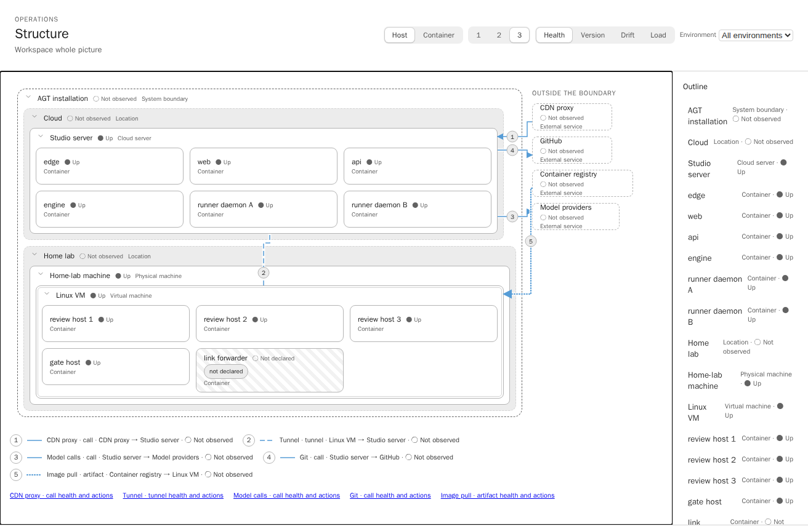
Overlays, no layers for storage or backup
Dark
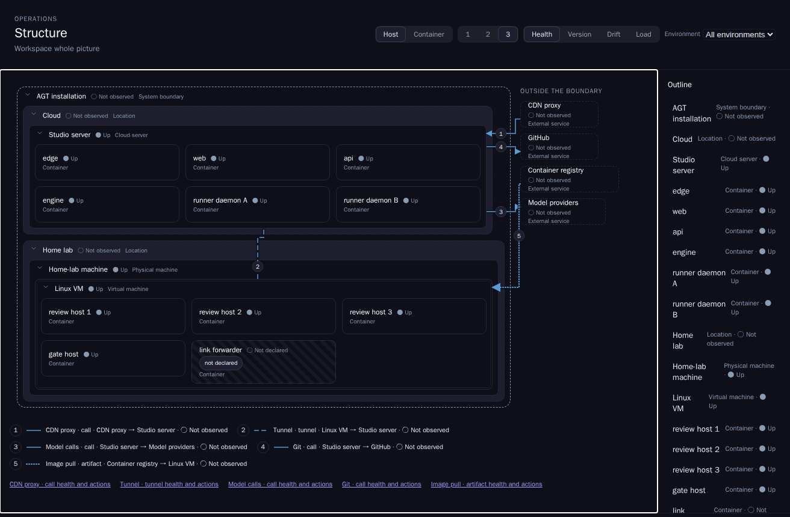
Evidence. Today's Structure view offers the overlays Health, Version, Drift and Load at levels 1 to 3 and no storage, backup, traffic or warnings layer.Light and dark: captured from the prebuilt frontend of this commit with every API answered by the role-named fixture in capture.mjs; no backend.
Best in class
Leading tools that draw live topology were studied for what makes them work; nothing below copies a look or a brand.
Kind of tool
What makes it good
What it leaves out for an installation of this size
Service maps of observability products (for example Datadog, Dynatrace Smartscape, New Relic)
Nodes coloured by health, edges sized by request rate and error rate, click to traces; layout generated from observed calls.
Hosts and VMs are flattened away, so "which disk holds this" and "what shares this machine" are lost; built for hundreds of services, not for eight containers whose placement matters.
Node graph panels (Grafana)
Arcs around nodes as gauges, a main and a secondary statistic per node, a data contract of nodes and edges any source can fill.
No nesting, no semantic zoom, no motion, no narrative.
Service mesh graphs (Kiali, Linkerd viz)
Animated traffic along edges, protocol and response-time labels, namespaces as boxes, a replay of a past window.
Only what passes the mesh; no storage, backup or host facts.
Container topology maps (Weave Scope)
Hosts, containers and processes as switchable views; live metrics sparklines in the node.
One view per level instead of continuous zoom; maintenance stopped.
Isometric cloud diagrams (Cloudcraft and similar)
Playful 2.5D blocks people enjoy; height and colour as live cost or load; a diagram people show others.
Labels collide and hit areas shrink once zoomed in; drawings are of declared resources, not of observed state.
Infinite canvas tools (Figma, tldraw, Excalidraw)
Smooth pan and pinch, minimap, search to focus, keyboard first, rendering only on change.
No live data at all.
Web maps
Semantic zoom: what is drawn changes with scale; labels stay readable at a fixed screen size; tiles render progressively.
Geography instead of topology.
What this view does better for a small to mid-size installation. It keeps the physical truth (cloud server, physical machine, VM, container) and opens it continuously by zoom; it treats storage, backup and open problems as first-class layers next to performance and health; it pins every construction site to its node with what it blocks and the next step; it lets a persona say what matters, with author, time, model, confidence and the facts it used, and never hides the facts underneath; it animates only causes (work moving, a deploy step, a restart, a link dropping) and replays them; and it keeps a full text outline as the accessible twin of the canvas.
Prototype
The prototype below is live. It runs on the Dossier's own engine (candidate A) and replays a recording of deltas. Roles only, no host names. Facts marked real in src/model.js come from the card and the code: the root disk at 84 % on software RAID 1, the sizes of workspace repository, checkouts and application state, the backup feature reporting not-configured, the manual snapshot of 9 November, the git mirror of the workspace. Capacities, CPU values, traffic, latencies, releases and the warnings for toolchain, release, parked cards and credentials are illustrative, modelled on the installation.
Try: pick layers and combine them; wheel, pinch or keys to zoom; levels 1 to 4; search "secret" or "gate"; 2.5D; Play replay and watch card 101 move from coding to gate to review, a deploy restart the web container, and the tunnel drop and recover while the reliability engineer reassesses. Pick Facts only to see the canvas without any assessment.
Level 2
Arrow keys move between nodes, Down enters a group, Up leaves it, Enter flies to the node, Shift and arrows pan, plus and minus zoom, 0 fits, 1 to 4 choose the level, slash searches, i switches 2D and 2.5D, p plays the replay. The outline below lists the same content as text.
21:40:00 UTC
Outline of the canvas (text alternative)
Semantic zoom
One infinite canvas; wheel and pinch zoom around the pointer, drag pans, keys pan, zoom, fit and jump to a level; a minimap moves the view; search focuses a node and flies to it. What is drawn depends on how large a group is on screen, not on a global switch: a group opens when its width passes a threshold (240 px for sites, 330 px for machines, 300 px for VMs, 330 px for a service's inside) and cross-fades from its summary to its children over the next third. Labels keep a minimum screen size and are cut to the width they have; text below 6 px turns into a soft bar. Links attach to the nearest visible node and bundle when both ends collapse into the same pair, so the overview draws a handful of lines instead of every connection.
Level
Drawn
Summary carried by closed groups
1 · Sites and outside services
Cloud site, home lab, outside services, the off-host target
Counts of machines, VMs and containers; missing-backup count; open problems
2 · Machines
Cloud server; physical machine with its VM nested inside
CPU and memory, volume fill and days until full, must-keep locations without copy
3 · Containers, services and daemons
Every container with its gauges, badges and one line for the top problem
Per layer: gauges, mounts, backup state, release, drift
4 · Inside a service
Slots, running cards, gate runs, data locations with backup state, problems
None; this is the leaf
Level 1Level 2Level 3Level 4
The four levels of the prototype at 1440 px, light theme. Captured 17 November 2026 from this Dossier's prototype by capture.mjs.
Layers
Layers are switched on and off and combine. Each owns a place so combinations do not collide: badges in the top-right corner of a node (health dot, backup shield, construction cone), metric rows at the bottom of a card in a fixed order (performance, storage, backup, version, drift), outline and soft tint for state, width, dash and particles on links. Colour stays in the accents: status colours only for states that need attention, the three work-kind colours only on moving work. A missing backup stays marked in every combination, as the owner asked.
Layer
Data
Encoding and legend
Performance and network
CPU, memory, load and slots per node (host telemetry); link state, latency and traffic (link supervisor, host counters).
Gauges in each card; amber from 75 %, red from 90 %. Link width and particle density follow traffic; dash pattern names the link type; latency on the link.
Storage
Volumes and mounts per machine with size, used, free and growth (host filesystems, telemetry history).
A volume bar under each machine header split by mount; amber below 30 GB or 15 % free, red below 8 GB or 5 %; days until full from the growth trend.
Backup
Every stateful data location with its class, its copies, the last successful copy and the recovery point (/api/operator/backups, data locations).
A shield per node: red cross for a must-keep location without an off-host copy, amber for a local copy only, green tick for a verified off-host copy, outline for reproducible, faint for cache. Copy links to the git remote and the backup target.
Construction sites and warnings
Open problems pinned to their node: missing or behind toolchains, releases behind stable, links down, parked or refused cards, disk pressure, expiring credentials, missing backups.
A cone per node with the count, red for blocking, amber for degrading; the top problem is written beside it when there is room. The side list says what blocks and the next step.
Health
Observed health per node and link (host reports, probes, link supervisor).
A dot in the corner and a soft tint for degraded or down nodes; hollow dot when not observed.
Version
Running release per node against the stable channel; pending host installs (host releases).
A release chip; amber with the distance when behind stable.
Drift
Declared placement against observed state (placement file, host reports).
Dashed outline and a chip: undeclared, declared only, differs.
Palette: the article and Studio tokens for surfaces, ink and status; the work kinds coding, gate and review use Studio blue 500, orange 500 (600 in dark) and violet 700. Run through the dataviz validator for all pairs, because any two can meet on the canvas: light passes every check (worst CVD ΔE 10.9, normal vision 18.7); dark passes with violet below 3:1 contrast, which the method allows with visible labels: every token carries its card and step as text, and the event log repeats it.
Light
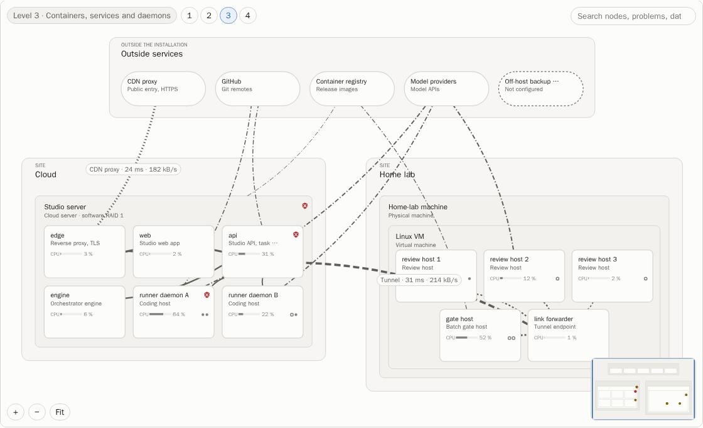
Dark
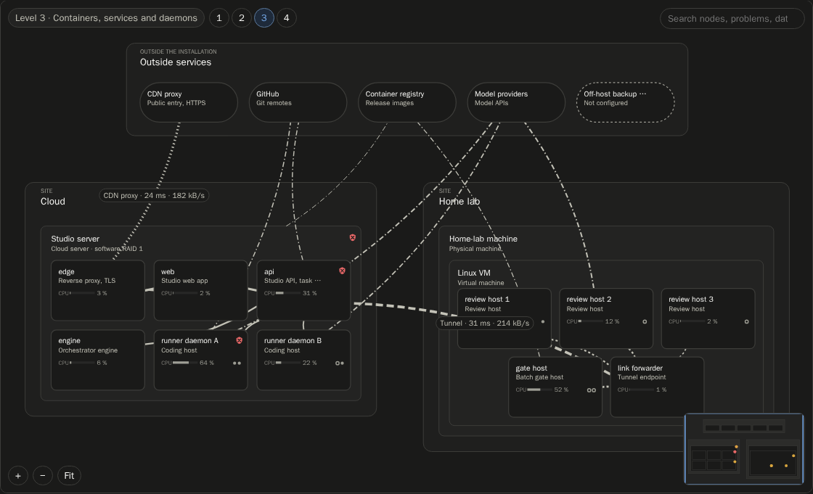
Performance and network. Gauges in each card; amber from 75 %, red from 90 %. Link width and particle density follow traffic; dash pattern names the link type; latency on the link.Captured from this Dossier's prototype by capture.mjs, 1440 px, only this layer on.
Light
Dark
Storage. A volume bar under each machine header split by mount; amber below 30 GB or 15 % free, red below 8 GB or 5 %; days until full from the growth trend.Captured from this Dossier's prototype by capture.mjs, 1440 px, only this layer on.
Light
Dark
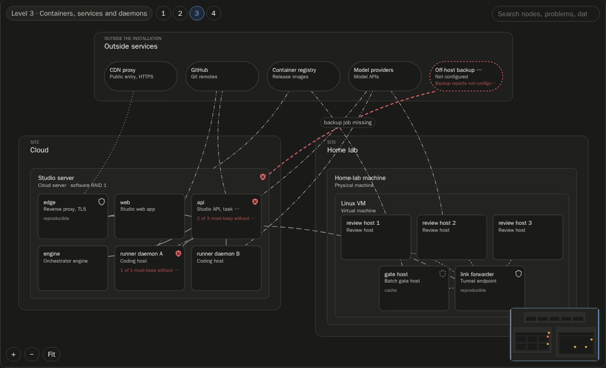
Backup. A shield per node: red cross for a must-keep location without an off-host copy, amber for a local copy only, green tick for a verified off-host copy, outline for reproducible, faint for cache. Copy links to the git remote and the backup target.Captured from this Dossier's prototype by capture.mjs, 1440 px, only this layer on.
Light
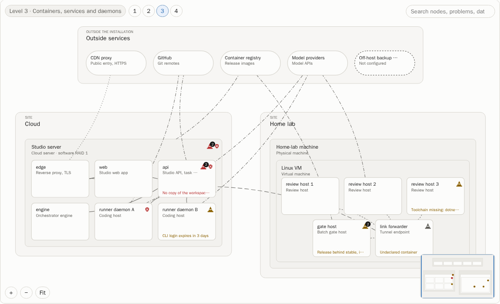
Dark
Construction sites and warnings. A cone per node with the count, red for blocking, amber for degrading; the top problem is written beside it when there is room. The side list says what blocks and the next step.Captured from this Dossier's prototype by capture.mjs, 1440 px, only this layer on.
Light
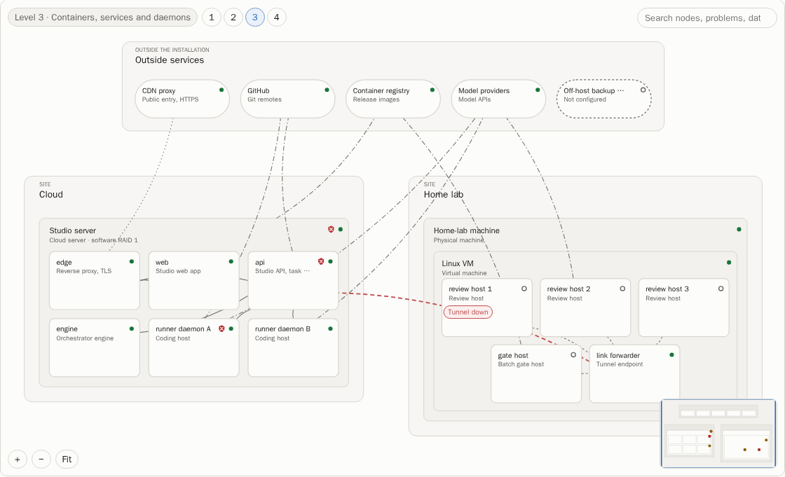
Dark
Health. A dot in the corner and a soft tint for degraded or down nodes; hollow dot when not observed.Captured from this Dossier's prototype by capture.mjs, 1440 px, only this layer on.
Light
Dark
Version. A release chip; amber with the distance when behind stable.Captured from this Dossier's prototype by capture.mjs, 1440 px, only this layer on.
Light
Dark
Drift. Dashed outline and a chip: undeclared, declared only, differs.Captured from this Dossier's prototype by capture.mjs, 1440 px, only this layer on.
Performance and network, light
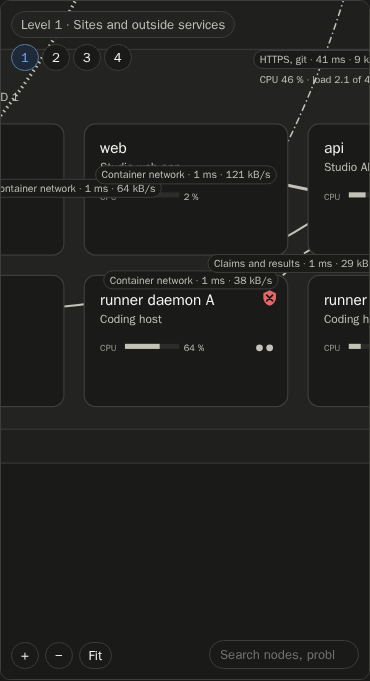
Performance and network, darkStorage, light
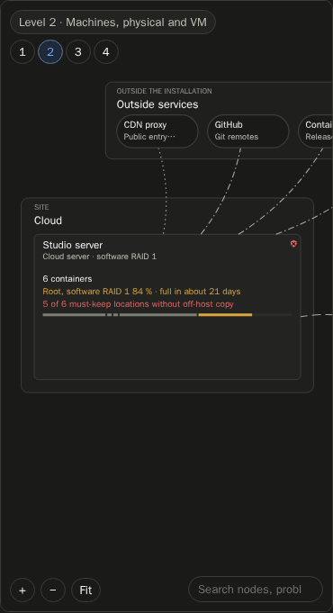
Storage, darkBackup, lightBackup, darkConstruction sites and warnings, lightConstruction sites and warnings, darkHealth, lightHealth, darkVersion, lightVersion, darkDrift, lightDrift, dark
Each layer at 390 px, light and dark. On a phone the canvas opens at level 1 and the panels stack below it. Captured 17 November 2026 from this Dossier's prototype by capture.mjs.
2D and 2.5D
Both strongest forms are prototyped on the same engine and switch with an animated projection. 2.5D lifts each service into a block whose height follows CPU (Performance layer) or the size of its mounts (Storage layer): a playful overview that reads at a glance which daemon is busy. Zoomed in, labels float over blocks, hit areas shrink and links cross faces, so detail work stays in 2D. 3D adds orbit controls, occlusion and a 130 kB chunk (three.js, gzip) for no fact that 2.5D cannot show.
2D
2.5DHeight is CPU
Prototype. The same facts in 2D and 2.5D; in 2.5D the busiest coding daemon stands out by height.Captured from this Dossier's prototype by capture.mjs, light theme, 1440 px.
Backup
Every stateful location is classified as must back up, must escrow (keys that are never inside a backup by design), reproducible or cache, with its copies, the last successful copy and the recovery point. The inventory below was checked against the code: SecurityStorePathPolicy keeps .security/ out of every commit, the workspace lifecycle never stages the attempt authority, KeyEncryptionKeySource and BackupCipher keep both keys outside every archive, and BackupCheckouts bundles local refs because checkouts are otherwise re-cloned.
Data location
Where
Size
Class
Copies today
Recovery point
Evidence
Workspace repository, committed part Task folders, receipts, reviews, prompts
api
31 GB
Must back up
git remote, last push 21:38
minutes
workspace-repository-lifecycle.md
Workspace local state, not in git .security (users, IAM, sessions, API tokens, sealed secrets) and attempt authority
Gate and review worktrees, object cache Recreated from bundled branches and remotes
gate host
162 GB
Cache
none
rebuild
illustrative
Host enrolment credentials Re-issued by re-enrolment
link forwarder
under 1 MB
Reproducible
none
rebuild
illustrative
Finding: the git mirror covers less than it seems
"The workspace repository has a copy, its git remote" is true only for the committed part. The workspace directory also holds .security/ (users, IAM, sessions, API tokens, runner credentials, sealed secrets) and the attempt authority with its journal; both are excluded from git by design and have no copy anywhere. Together with the application state, the CLI logins and the two keys, five of six must-keep locations have no off-host copy. The one copy of the application state is a manual snapshot of 9 November on the same RAID pair: RAID 1 survives one failed disk, not deletion, corruption, a bad update or the loss of the server.
The Backup layer reads GET /api/operator/backups (state not-configured, no backup key, off-host kind none) and the data locations, draws a shield on every node that holds state, draws the git mirror as a green copy link and the missing backup job as a red dashed link to a ghost node "Off-host backup target: not configured", and shows the goal "every must-keep location has a verified off-host copy" as progress: 1 of 6 today. The persona keeps proposing the next concrete step until the goal is met: the owner decisions D7 (target) and D8 (key custody), then a card to configure the backup and verify one restore, then escrow attestations, so the view can show the date each key copy was confirmed.
Project data the Studio hosts has its own backup paths: managed databases (AGT-3878, backend/Features/Projects/ManagedDatabases/) and hosted volumes (HostedVolumeBackupService). Where an installation runs them, they appear as data locations of their run target with the copies those services report; the same classes, shields and goal apply. The installation inventory above covers the Studio's own state.
Construction sites and warnings
Every open problem is a fact from an existing API, pinned to the node it concerns, with what is wrong, what it blocks and the next step. The persona groups and ranks them; without a persona they sort by severity. A cone on the node carries the count; at level 3 the top problem is written on the card; at level 4 every problem is listed inside the service.
Kind
Fact source today
Pinned to
Dependency, toolchain or CLI missing or behind
InstalledCliDto.IsBelowTarget, HeldCapabilityDto, RemoteDispatchRejection.Capability in /api/v1/management/remote-hosts
The host or container
Host release behind stable, pending host install
/api/v1/management/host-releases (HostReleaseDriftSnapshot), enrolments without consumption
The host
Link down
/api/v1/management/links (RunnerLinkResource), bus tag runner-link
The host that refused or failed, with the card keys
Disk pressure
HostDiskPressurePolicy (warning below 30 GiB or 15 % free, critical below 8 GiB or 5 %), telemetry finding disk-pressure
The machine and volume
Expiring credentials
CapabilityHealthDto.ExpiresAt, signal credentials-expiring, environment-certificate-expiring, /api/v1/management/credential-inventory
The host or the edge
Missing backups
/api/operator/backups warnings, data locations
The node holding the location
Motion and live updates
Nothing moves without a cause. Every animation maps to a fact change, and the event log says the same in words.
Cause
Motion
Without motion
Traffic on a link
Particles along the link; density follows traffic, speed is constant; at most 30 frames a second
Link width follows traffic
Work moves (coding finished, gate passed, review passed)
A token in the work-kind colour travels hop by hop from coding host to gate to review and back, labelled with card and step
The running-work list inside the services changes; log line
A deploy step runs on a node
An arc circles the node while the step runs
Step text inside the service; log line
A container restarts
A grey wash drains away, then a short green ring
Health dot changes; log line
A link drops
A short red ring at both ends; the link breaks with a gap and a cross
The broken link and its label
A value changes (CPU, disk, slots)
Gauges and block heights ease to the new value
The new value
A persona reassesses
Callouts and ranking change in the next update
Same
Updates arrive as deltas from the structure stream of AGT-3954. The client queues them and applies everything that arrived in one visual update per second at most; the replay counts deltas received against visual updates. With prefers-reduced-motion the motion level is Off: state changes apply instantly and nothing animates. Rendering is on demand: no frame is drawn when nothing changes, flow particles run only while the canvas is on screen and the tab is visible, and a hidden tab stops all drawing until it returns, when the pending deltas apply as one update. The replay in the prototype plays a recording of 44 seconds; a screen recording of it is in the evidence.
Assessments by personas
Facts and assessments are separate. Facts come from the APIs (structure, telemetry, deploy records, /api/operator/backups) and are always drawn the same way. Assessments are produced case by case by a model call and draw on top: which location must be backed up and which is reproducible, risk and priority, callouts such as "no backup here" or "disk fills in about 21 days", which nodes to emphasise, the ranking of problems, a short judgement and the goal with its next steps. No hand-coded rule set decides these.
The assessments are authored by personas of the existing team, not redefined here: the catalogue already has the operations-warden (aspect operations: backups, restore tests, off-host copies, escrow, TLS, credentials) and the reliability-engineer (aspect reliability: runs, batches, latency, hosts), so no role is added. Scheduling, admission and the budget ledger are the persona team's (scheduling, budgets); an assessment is a persona occurrence whose item is a view specification, and it also reaches the persona's feed and the magazine's operations watch like any other item (reporting, magazine). The viewer picks the persona whose assessment the canvas shows; each shows author persona, time, model, confidence and the facts it used, and the raw specification is one click away.
View specification
The model returns a declarative document, structure-view-spec/v1; the schema is schema/structure-view-spec.v1.schema.json. It names nodes, links and warnings by id; it can enable layers as a suggestion, emphasise nodes, add up to six callouts, rank problems, state goals with steps, and write a headline and a judgement in plain text. It cannot carry code, markup, styles, colours or positions. The validator rejects unknown keys, markup in any text, references to nodes or links that do not exist in the current facts, and goals that report more done than total; the canvas then shows facts only and says why. Specifications are cached and versioned by persona and facts version, so the view loads with the last valid one instantly and shows when it was assessed. The example the prototype shows:
Operations warden, revision 3
{
"schemaVersion": "structure-view-spec/v1",
"id": "ows-2026-11-17-2130",
"revision": 3,
"persona": {
"id": "operations-warden",
"role": "operations",
"title": "Operations warden"
},
"createdAt": "2026-11-17T21:30:00Z",
"model": {
"capabilityClass": "balanced",
"id": "claude-sonnet-5-5"
},
"confidence": 0.86,
"tokens": {
"input": 9400,
"output": 1100
},
"factsUsed": [
"backups.overview@2026-11-17T21:30Z",
"structure.dataLocations@seq1838",
"structure.volumes@seq1838",
"capabilities.credentials@2026-11-17T21:25Z"
],
"headline": "One of six locations that must survive a disk loss has an off-host copy.",
"judgement": "Only the committed part of the workspace leaves the server, through its git remote. The workspace local state, the application state, the CLI logins and both keys have no off-host copy; the application state's only copy is an 8-day-old snapshot on the same RAID pair. RAID 1 survives one failed disk, not deletion, corruption or the loss of the server.",
"layers": {
"enable": [
"backup",
"warnings"
],
"emphasise": "backup"
},
"emphasis": [
{
"node": "c-api",
"weight": "strong"
},
{
"node": "m-studio",
"weight": "strong"
},
{
"node": "tgt-offhost",
"weight": "normal"
}
],
"annotations": [
{
"id": "a1",
"node": "c-api",
"tone": "bad",
"title": "No backup here",
"text": "Workspace local state and application state have no off-host copy.",
"factRefs": [
"dl-workspace-local",
"dl-appstate"
]
},
{
"id": "a2",
"node": "m-studio",
"tone": "bad",
"title": "Secret store key not escrowed",
"text": "Without a copy, sealed secrets cannot be opened after a rebuild.",
"factRefs": [
"dl-secrets-key"
]
},
{
"id": "a3",
"node": "tgt-offhost",
"tone": "warn",
"title": "No off-host target",
"text": "Choose one; the backup job needs it and a backup key.",
"factRefs": [
"backups.offHost"
]
},
{
"id": "a4",
"node": "m-studio",
"tone": "warn",
"title": "Disk fills in about 21 days",
"text": "84 % used, about 0.9 GB a day.",
"factRefs": [
"v-root"
]
}
],
"ranking": [
"w-backup-workspace-local",
"w-secrets-key",
"w-backup-appstate",
"w-disk",
"w-cred",
"w-toolchain",
"w-release",
"w-parked",
"w-drift"
],
"goals": [
{
"id": "backup-coverage",
"title": "Every must-keep location has a verified off-host copy",
"done": 1,
"total": 6,
"steps": [
{
"kind": "owner-decision",
"title": "Choose the off-host target",
"detail": "Decision D9 of this Dossier; SFTP to a second site is recommended.",
"state": "open"
},
{
"kind": "owner-decision",
"title": "Decide key custody",
"detail": "Backup key and secret store key escrowed apart, as two password manager entries.",
"state": "open"
},
{
"kind": "card",
"title": "Configure the Studio backup and verify one restore",
"detail": "Backup:KeyFile, Backup:Target, sources workspace, home, stack; first verified archive.",
"state": "proposed"
},
{
"kind": "card",
"title": "Record escrow attestations",
"detail": "Owner attests both key copies by fingerprint; the view shows the date.",
"state": "proposed"
}
]
}
]
}
Light
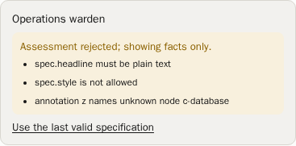
Falls back to facts
Dark
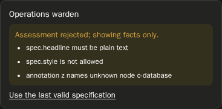
Prototype. A specification with markup in its headline, an unknown key and an unknown node is rejected and the canvas shows facts only, with the reasons.Captured from this Dossier's prototype by capture.mjs.
Refresh, cost and freshness
Item
Value
Model
Capability class balanced resolved by ModelSelectionService for consumer persona, same-class fallback only; today that is Claude Sonnet 5.5 at $2 input, $10 output and $0.20 cached input per million tokens.
Tokens per assessment
About 5,000 input (3,500 of them a cached prefix: persona charter, schema, rules; 1,500 the compact facts digest) and 800 output. Priced: about $0.012 per assessment.
Triggers
A change of a relevant fact: backup state or a data location's copy, a new or closed problem of severity bad, a link down for more than 2 minutes, a disk pressure tier, a release drift. Coalesced per the persona team's windows (6 hours, 1 hour for floors of importance 90 and more). A schedule every 12 hours. A viewer's "reassess now" passes the same admission.
Calls per day
About 2 scheduled plus 1 to 4 triggered per persona; two personas: 6 to 12 calls, 35 to 70 kTokens, $0.07 to $0.15 a day.
Budget fit
About 20 to 40 kTokens per persona per week of the 60 to 160 kToken allowance; when an allowance is spent, the canvas keeps the last valid specification and marks it stale.
Freshness shown
"Assessed 21:30 UTC, 10 minutes ago, revision 3"; callouts whose referenced facts changed since are dropped until the next assessment.
Data the layers need
The canvas consumes the extended structure endpoint of AGT-3954. Assumed shape, in the field style of today's StructureNode, StructureLink and StructureObservation:
A gap in seq makes the client fetch a new snapshot. Facts that AGT-3954 does not deliver, and how to gather them cheaply:
Fact
Source
API shape
Cost
Traffic per link
Host agent reads per-container network counters (cgroup or /proc/<pid>/net/dev) and the forwarder's tunnel byte counters in the existing host report
link.observation.bytesPerSec, rate over the last report window
Two counter reads per container per 15-second report; the server computes the rate; no packet capture
Latency per link
Link supervisor heartbeat round trip; for HTTPS to outside services the timings of calls already made (model calls, git pushes, image pulls)
link.observation.latencyMs, median of 5 minutes
No synthetic probes
Volumes, mounts and growth
HostTelemetrySnapshotDto.Filesystems (exists); mount to container mapping from the container runtime at container start; growth by linear fit over the telemetry history
Mount mapping cached per container start; sizes of known stores from their own accounting (git object count, a daily low-priority scan of the application state, the runtime's image accounting) once a day
Copies and recovery point
/api/operator/backups (exists); the workspace export's push receipts for the git mirror
copies[]: { kind, target, at, offHost, verified } on each data location
Read when either source changes
Escrow of the two keys
Owner attestation by key fingerprint (new); the system cannot see a password manager
POST /api/operator/backups/escrow { keyKind, fingerprint }; shown as "attested on"
Manual, once per key rotation
Container restarts and deploy steps
Host report container state with start time and restart count; instance deploy records of AGT-3879
Delta ops restart and deploy
Already reported; two fields added
Work movement
Lane transitions and claims already on the task hub (jobsChanged, runnerStatusChanged) joined with the claiming host
Delta op work
Mapping only
Budget
Budget
Limit
Measured in the prototype
Studio initial bundle
No growth: canvas and charts load only with their route through a dynamic import
Not applicable to the Dossier; checked by the build stats in slice LSC-1
Canvas chunk
At most 35 kB gzip including its Angular component
Engine, layers and specification validator minified: 17.6 kB gzip
Chart chunk
At most 30 kB gzip, loaded only by chart views
uPlot with its styles: 23.3 kB gzip
Pan and zoom
60 frames a second at the installation's size; at least 50 with 500 nodes and 2,000 links
See Alternatives; the real scene: a frame costs 9.4 ms (p95 53.7 ms) during a scripted pan and zoom at 1440 px, above the 16.7 ms of 60 frames a second. Over four runs the median stayed at 9 to 10 ms and the p95 ranged from 20 to 56 ms: the slow frames are the crisp redraws when the cached layer is refreshed, which LSC-1 moves off the input path.
Idle
No frame when nothing changes; no drawing while the tab is hidden or the canvas off screen
0 frames in 3 seconds idle; 0 frames in 3 seconds with the tab hidden
Flow animation
At most 30 frames a second, only while visible
23 frames a second with the Performance layer on, 7 % of one core for the page
Delta updates
At most one visual update a second
53 deltas over the 45-second replay produced 10 visual updates
Reduced motion
Animation off; state applies instantly
Motion level Off when prefers-reduced-motion is set; checked by verify.mjs
Assessments
Within each persona's weekly allowance; about $0.15 a day for two personas
Three candidates suited to an animated, zoomable topology with nested groups, each drawing the same synthetic scene of 500 nodes (10 sites, 40 machines, 450 containers) and 2,000 links with the same layout, under the same scripted pan and zoom between fit and three times fit.
A · Own Canvas 2D engine
The prototype's engine, no dependency: nested layout, semantic zoom, link bundling, a static layer cached while the camera moves and redrawn crisp when it settles, a dynamic layer for particles, tokens and effects, render on demand. Accessibility through the outline tree and aria-activedescendant. Maintained by us.
B · PixiJS 8 (WebGL 2D)
A scene graph on the GPU: static geometry built once, pan and zoom move a container, its ticker can be stopped to render on demand. Text through bitmap fonts. No graph semantics; layout, bundling and hit testing on nodes stay ours. MIT, active.
C · Cytoscape.js 3 (graph framework)
Compound nodes for nesting, a stylesheet, layered texture caches during viewport changes, rendering on demand, a mature ecosystem. No particles; motion only as animated styles on all edges. MIT, active.
Candidate
Lazy chunk, gzip
Pan and zoom, frames a second (CPU raster)
Same, default GPU path
Idle CPU
Flow animation CPU
JS heap
First render
A · Own Canvas 2D engine
17.6 kB (44.1 raw)
51 p95 33 ms
56
0.0 %
33 % at 23 fps
3.1 MB
281 ms
A · same, semantic zoom on
17.6 kB (44.1 raw)
40 p95 50 ms
42
0.0 %
11 % at 23 fps
2.2 MB
99 ms
B · PixiJS 8 (WebGL 2D)
167.7 kB (574.1 raw)
1 p95 1533 ms
1
2.6 %
117 % at 0 fps
30.3 MB
2300 ms
C · Cytoscape.js 3 (compound graph)
140.3 kB (439.8 raw)
50 p95 33 ms
52
3.0 %
64 % at 2 fps
48.2 MB
3187 ms
Measured 2026-11-17 on the task runner: Intel(R) Core(TM) i7-8700 CPU @ 3.20GHz, 12 threads, headless Chromium 147.0.7727.15, 1440x900, drawing surface 1280x800 at device pixel ratio 1. WebGL there is ANGLE (Google, Vulkan 1.3.0 (SwiftShader Device (Subzero) (0x0000C0DE)), SwiftShader driver): the runner has no usable GPU. Median of 3 runs. Versions: pixi.js 8.23.0, cytoscape 3.35.0, three 0.187.0, uplot 1.6.32, echarts 6.1.0, chart.js 4.6.1. Pan and zoom counts frames actually rendered. "CPU raster" disables the GPU process, the realistic case for a machine without GPU acceleration; "default GPU path" runs WebGL and accelerated canvas on SwiftShader, a software emulation that penalises every GPU candidate and says nothing about a real GPU. Idle and flow CPU are the whole browser's process tree in percent of one core over 5 seconds.
Reading the numbers. A and C both hold about 50 frames a second in pan and zoom on CPU raster with every node and link drawn (medians of three runs), C by drawing cached element textures, A by blitting its cached static layer and redrawing crisp when the camera settles. When content must change every frame, as with flow animation, A draws about 23 frames a second at a third of a core, C about 2 at more than half a core, because C has no particles and restyles every edge to animate a dash. With semantic zoom on (the product's mode) A draws far less: flow costs about a tenth of a core, while pan and zoom drop to about 40 frames a second because the cross-fading levels force full redraws; LSC-1 tunes when the cache is reused. B could not be measured fairly on this runner: its CPU side submits a frame in about 2 ms, but with WebGL in software it renders below 1 frame a second; on a real GPU it would likely be the fastest of the three. Chunk size separates them clearly: A is 17.6 kB gzip with its layers and validator, C 140.3 kB, B 167.7 kB. Idle cost is 0 % for A and about 3 % for B and C. Accessibility is ours in every case: none exposes canvas content to assistive technology, so the outline tree and keyboard focus on nodes are built in the Studio component regardless.
Dimension
2D
Most readable at every level; all labels, gauges and hit areas aligned; cheapest.
2.5D isometric
Playful and memorable at levels 1 to 3; height can carry a metric; labels float and collide when zoomed in. Same engine, same data; one projection parameter.
3D
Orbit controls, occlusion and depth sorting for no extra fact; three.js alone is 130.2 kB gzip.
Chart library for the hosting area
Measured with a dashboard of three charts: six series of 1,440 one-minute samples, thirty days of three stacked counts, and one week of one-minute samples; then twenty live updates that append a sample to each series.
Library
Lazy chunk, gzip
Three charts, first render
Live update of 6 × 1,440 points
JS heap
Licence
uPlot 1
23.3 kB (52.4 raw)
126 ms
2.5 ms
2.2 MB
MIT
Apache ECharts 6 (line, bar, grid, tooltip, legend, aria, canvas)
186.1 kB (545.0 raw)
581 ms
57.6 ms
19.8 MB
Apache-2.0
Chart.js 4 (line, bar, scales, tooltip, legend, filler)
61.5 kB (176.0 raw)
261 ms
13.6 ms
11.2 MB
MIT
uPlot
Time series, bands and bars; tiny and the fastest update; no built-in accessibility, tooltip and legend are thin; no pie, sankey or heatmap without plugins.
Apache ECharts
The broadest set of forms (heatmap, sankey, treemap, gauges) with an aria module and decal patterns; about eight times uPlot's chunk and the slowest live update.
Chart.js
Familiar API, broad basic forms, plugin ecosystem; middle size; slower than uPlot for large live series; no built-in accessibility.
How much the model composes
Facts only
Deterministic, no cost, no judgement; the owner's goal-directed view does not exist.
Assessment on top of facts
The model adds callouts, emphasis, ranking, goals, a judgement and layer suggestions; facts and layout stay deterministic and always visible.
Model-composed view
The model also chooses grouping, layout order and default layers; most adaptive, least predictable, harder to compare from day to day.
Recommendation
Recommended default
Renderer: A, the own Canvas 2D engine, ported to a lazy Angular component. It meets the frame budget on CPU raster where the WebGL candidate cannot even be measured, it is the only candidate whose particles and tokens stay cheap, and it costs 17.6 kB gzip instead of 140 to 170. Its scaling path is known: if the first slice's re-run on a workstation GPU or a real installation misses 50 frames a second, PixiJS replaces the draw layer behind the same scene, layer and hook interfaces. Chart library: uPlot, lazy, for every time-series and bar chart of the hosting area (AGT-3950), with the dataviz rules, a table view and the Studio tokens; a form uPlot cannot draw is drawn as a small SVG component, not with a second library.
2D by default with a 2.5D overview switch.Default layers Performance and network, Health, and Construction sites, remembered per user; missing backups always marked. Motion Lively, off with reduced motion. The canvas replaces the Structure view once it reaches parity (outline, deep links, project scope, Version and Drift). Backup target: SFTP to the home lab's storage, a second site the owner controls, checked by the Backup layer through /api/operator/backups; the backup key and the secret store key escrowed apart as two password manager entries. Assessments by the operations warden and the reliability engineer, on change and every 12 hours, on top of facts, never instead of them.
First slice: the canvas with machines and containers, semantic zoom and the Performance and network layer on live data (LSC-1), then live deltas and motion, storage, backup, warnings, persona specifications and the 2.5D overview. Every recommendation is a working decision until the owner records another option.
Prototype. The replay at level 3: card 101 travels from runner daemon A through the tunnel to the gate host and on to review host 2, the web container restarts during a deploy, the tunnel drops and recovers, and the reliability engineer's callout changes with it; the counters show deltas received against visual updates.Recorded from this Dossier's prototype by capture.mjs, light theme, 1440 px.
LightLink down, clearly broken
Dark
Prototype. A dropped link breaks visibly and the reliability engineer's reassessment pins "Tunnel down" to it.Captured from this Dossier's prototype by capture.mjs.
Open decisions
Each decision has a recommended working option; it stands until the owner records another.
D1 · Canvas renderer
Which renderer draws the structure canvas, and every canvas of the Studio?
Meets the frame budget on CPU raster, cheapest particles and tokens, smallest chunk; PixiJS stays the measured fallback behind the same interfaces.
D2 · Chart library
Which single chart library draws the hosting area's charts (AGT-3950)?
Smallest chunk and fastest live update for time series and bars; other forms as small SVG components, not a second library.
D3 · 2D, 2.5D or 3D
Which projection does the canvas use?
2D reads best at every level; 2.5D is the playful overview on the same engine at little cost; 3D adds cost and no fact.
D4 · Default layers
Which layers are on when a user opens the canvas for the first time?
Answers 'is it live and is anything broken' at once; missing backups are marked in every combination anyway.
D5 · Motion level
How much moves by default?
The owner asked for movement; every motion has a cause, runs at most at 30 fps and stops when hidden.
D6 · Replace the Structure view
Does the canvas replace the current Structure view?
Two drawings of the same machines drift apart; parity first keeps every link working.
D7 · Backup target the Backup layer checks
Which off-host target should the backup job use and the Backup layer check against?
Off-host and off-site with no new account; supported by the backup feature; a bucket can follow as a second copy.
D8 · Key custody
Where are the backup key and the secret store key escrowed?
The restore runbook requires the keys apart from the backups and from each other; attestation lets the view show the date.
D9 · Roles that assess
Which personas assess the installation for the canvas?
Backup, credentials and escrow belong to the warden; hosts, links and capacity to the reliability engineer; both exist in the catalogue.
D10 · Refresh cadence
When do the personas reassess?
Fresh after a change, cheap otherwise: about $0.15 a day for two personas, within their weekly allowances.
D11 · How much the model composes
How much of the view may be LLM-composed?
Keeps facts deterministic and comparable while the persona says what matters and what to do next.
Implementation
Slices are defined in workbench.json, in delivery order with their dependencies. Facts and deltas are covered by AGT-3954 and the dashboard charts by AGT-3950; the slices here consume them. No product code is changed by this Dossier.
Slice
Delivers
After
LSC-1 Live structure canvas: machines, containers, semantic zoom, Performance and network layer
Lazy canvas with semantic zoom, minimap, search, keyboard and outline; Performance and network and Health layers on live structure data; budget and accessibility checks; GPU re-run of the renderer benchmark.
none
LSC-2 Traffic and latency per link
Per-link bytes per second and latency from existing reports and heartbeats, attached to structure links.
none
LSC-3 Live deltas, motion with causes and replay
Delta batching to one update a second, cause-bound animations, event log, replay of recorded deltas.
LSC-1
LSC-4 Version and Drift layers; the canvas replaces the Structure view
Version and Drift layers, parity with the current Structure view, canvas becomes the default.
LSC-1
LSC-5 Storage facts and Storage layer
Volumes, mounts and growth as facts; the Storage layer with pressure and days until full.
LSC-1
LSC-6 Backup layer, escrow attestations and the backup goal
Backup coverage per data location, escrow attestations, copy links, goal progress, missing backup always visible.
LSC-1
LSC-7 Construction sites and warnings layer
Every open problem pinned to its node with what it blocks and the next step.
LSC-1
LSC-8 Persona view specifications for the structure canvas
Persona-authored, schema-validated, cached view specifications drawn on top of the facts.
LSC-6, LSC-7
LSC-9 2.5D overview mode
Isometric overview mode on the same engine and data.